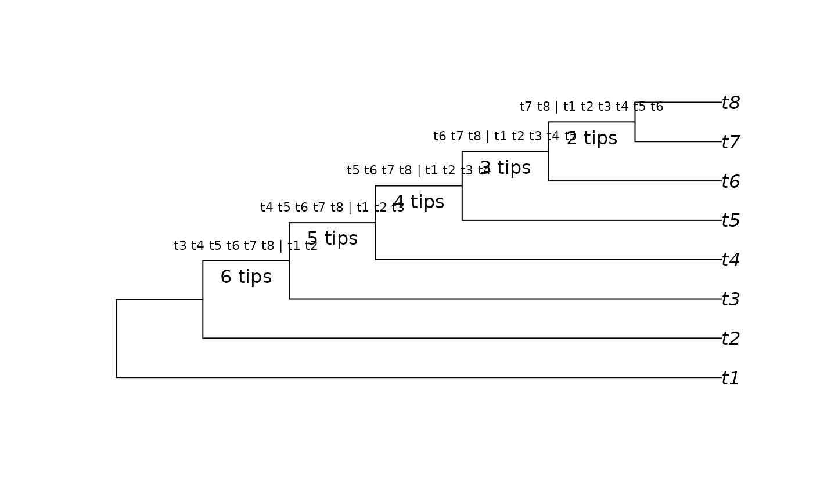

TipsInSplits() specifies the number of tips that occur within each
bipartition split in a Splits object.
Usage
TipsInSplits(splits, keep.names = TRUE, smallest = FALSE, ...)
# S3 method for class 'Splits'
TipsInSplits(splits, keep.names = TRUE, smallest = FALSE, ...)
# S3 method for class 'phylo'
TipsInSplits(splits, keep.names = TRUE, smallest = FALSE, ...)
SplitImbalance(splits, keep.names = TRUE, ...)
# S3 method for class 'Splits'
SplitImbalance(splits, keep.names = TRUE, ...)
# S3 method for class 'phylo'
SplitImbalance(splits, keep.names = TRUE, ...)Arguments
- splits
Object of class
Splitsorphylo.- keep.names
Logical specifying whether to include the names of
splitsin the output.- smallest
Logical; if
TRUE, return the number of leaves in the smaller bipartition.- ...
Additional parameters to pass to
as.Splits().
Value
TipsInSplits() returns a named vector of integers, specifying the
number of tips contained within each split in splits.
SplitImbalance() returns a named vector of integers, specifying the
number of leaves within a split that are not "balanced" by a leaf outside it;
i.e. a split that divides leaves evenly has an imbalance of zero; one that
splits two tips from ten has an imbalance of 10 - 2 = 8.
See also
Other Splits operations:
LabelSplits(),
NSplits(),
NTip(),
PolarizeSplits(),
SplitFrequency(),
Splits,
SplitsInBinaryTree(),
TipLabels(),
match,Splits,Splits-method,
xor()
Examples
tree <- PectinateTree(8)
splits <- as.Splits(tree)
TipsInSplits(splits)
#> 11 12 13 14 15
#> 6 5 4 3 2
plot(tree)
LabelSplits(tree, as.character(splits), frame = "none", pos = 3L, cex = 0.7)
LabelSplits(tree, TipsInSplits(splits), unit = " tips", frame = "none",
pos = 1L)
